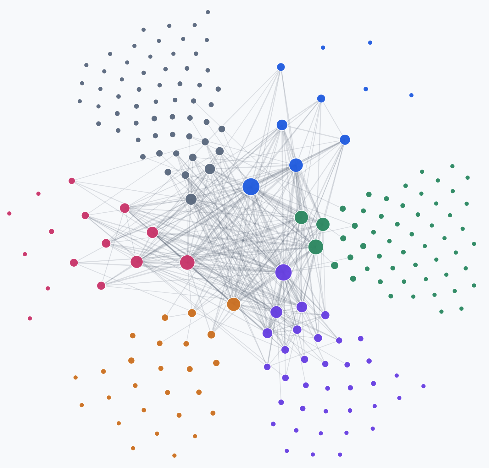
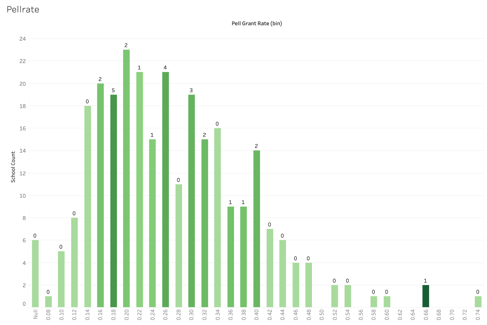
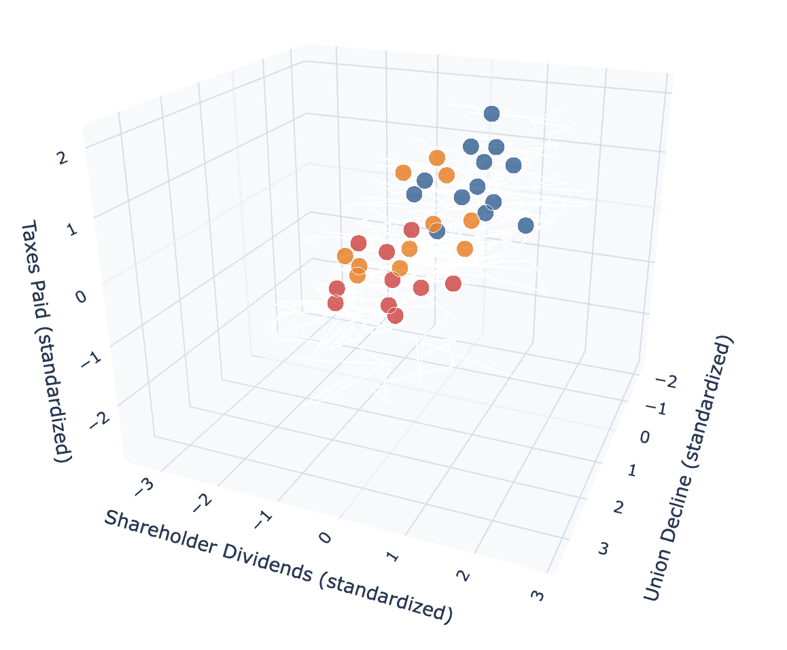

Undergraduate Economics Research Assistant
Interactive
The Social Geography of Baltimore's Elite, 1967–1989

After 1950, Baltimore experienced a significant decline in its elite population, with the number of elite individuals dropping significantly. This project explores the social geography of Baltimore's elite during this period.
CSV/JSON Processing
pytesseract
pdf2image
JavaScript
Python
Time Series
Text Recognition
View project
Higher Education Market Intelligence Dashboard

I had the opportunity to work on a project for Jamix, a company that provides software solutions for the food service industry. I built a market intelligence dashboard that aggregates and visualizes data on higher education institutions.
Python
Tableau
Excel
Writing
CRM Management
Scikit-learn
Pandas
Numpy
View project
Undergraduate Economics Research Assistant
Interactive
Industry Clustering and Union Decline Analysis

This project investigates the relationship between industry clustering and the decline of labor unions in the United States using data from the Bureau of Labor Statistics.
Python
Pandas
NumPy
Scikit-learn
Plotly
Time Series
Excel
PowerPoint
View project
Personal Project
2026
OnlyUp: A Goal Tracker App
OnlyUp is a goal tracking app that I built to help myself stay motivated and accountable. The app allows users to set goals, track their progress, and perform the information retention technique known as "active recall".
Python
Tkinter
CSV Data Storage
Desktop App Development
View project
Class Project
2025
Exploring County Level access to Credit in the United States

In this project, I analyzed county-level data on credit access in the United States to identify patterns and disparities in financial inclusion. The analysis included data cleaning, exploratory data analysis, and visualization to uncover insights about credit access across different regions.
Jupyter Notebook
Python
Pandas
Seaborn
SciPy
Scikit-learn
View project
Experiment
In Progress
Predicting The FIFA World Cup
I've always been a huge soccer fan, and I've been heavily invested in the World Cup.
For this project, I'm using machine learning techniques to predict the outcomes of World Cup matches.
Stay tuned for this one, I'm really excited about it!
Machine Learning
Python
Scikit-learn
View project